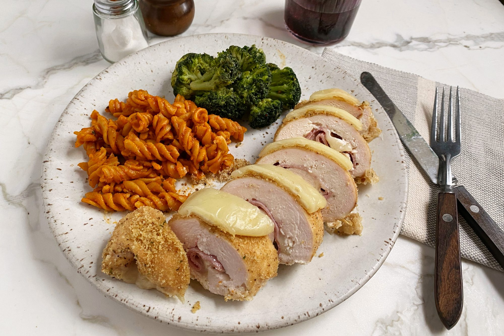

Chicken Cordon Bleu

Chicken Cordon Bleu, a wonderful dish for weeknights
Ingredients
- 4 skinless, boneless chicken breast halves
- 1/4 teaspoon salt
- 1/8 teaspoon ground black pepper
- 6 slices Swiss cheese
- 4 slices cooked ham
- 1/2 cup seasoned bread crumbs
Directions
- Preheat oven to 350 degrees F (175 degrees C). Coat a 7x11 inch baking dish with nonstick cooking spray.
- Pound chicken breasts to 1/4 inch thickness.
- Sprinkle each piece of chicken on both sides with salt and pepper. Place 1 cheese slice and 1 ham slice on top of each breast. Roll up each breast, and secure with a toothpick. Place in baking dish, and sprinkle chicken evenly with bread crumbs.
- Bake for 30 to 35 minutes, or until chicken is no longer pink. Remove from oven, and place 1/2 cheese slice on top of each breast. Return to oven for 3 to 5 minutes, or until cheese has melted. Remove toothpicks, and serve immediately.